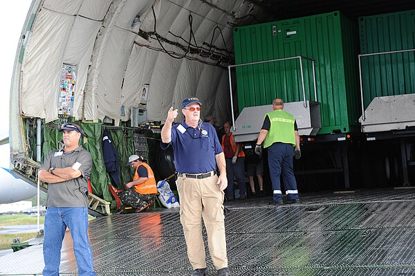

<!-- Add this at the beginning of your template for debugging -->

<div style="background-color: #ffeeee; padding: 10px; border: 1px solid red; margin-bottom: 10px;">
    <p>Debug: Found 3 fetched images</p>
    
        <p>Image 0: FEMA_Quietly_Eases_Rules_Meant_1.jpg</p>
    
        <p>Image 1: FEMA_Quietly_Eases_Rules_Meant_2.jpg</p>
    
        <p>Image 2: FEMA_Quietly_Eases_Rules_Meant_3.jpg</p>
    
    <p>Relative static path: ../../../static</p>
</div>


<!DOCTYPE html>
<html lang="en">
<head>
    <meta charset="UTF-8">
    <meta name="viewport" content="width=device-width, initial-scale=1.0">
    <title>FEMA&#39;s Controversial Halt to Flood Protection Enforcement: A Dangerous Gamble with Public Safety and Taxpayer Funds?</title>
    <link rel="stylesheet" href="../../static/css/main.css">
    
    <link rel="stylesheet" href="../../../static/css/article.css">

</head>
<body>
    
        <header class="site-header">
    <div class="header-content">
        <div class="logo">
            <a href="/">Article Summarizer</a>
        </div>
        <nav class="main-nav">
            <ul>
                <li><a href="/">Home</a></li>
                <li><a href="/stats">Statistics</a></li>
                <li><a href="/about">About</a></li>
            </ul>
        </nav>
    </div>
</header>
    
    
    <div class="container">
        
<div class="article-container">
    <!-- Main Article Title -->
    <h1 class="article-title">FEMA&#39;s Controversial Halt to Flood Protection Enforcement: A Dangerous Gamble with Public Safety and Taxpayer Funds?</h1>
    
    <!-- Source Attribution -->
    
    <div class="source-attribution">
        <p class="source-attribution"><span class="label">Source:</span> <span>The New York Times</span> <span>|</span> <span class="label">Published:</span> <span>February 14, 2025</span></p>
    </div>
    
    
    <!-- Keywords Section -->
    
    <div class="keywords-container">
        <p class="keywords-heading"><strong>Keywords:</strong></p>
        <div class="keywords-tags">
          
             <span class="keyword-pill">FEMA</span>
          
             <span class="keyword-pill">Flood Risk</span>
          
             <span class="keyword-pill">Federal Flood Risk Management Standard</span>
          
             <span class="keyword-pill">Public Buildings</span>
          
             <span class="keyword-pill">Executive Order</span>
          
             <span class="keyword-pill">Rule Enforcement</span>
          
             <span class="keyword-pill">Climate Change</span>
          
             <span class="keyword-pill">Disaster Recovery</span>
          
             <span class="keyword-pill">Administrative Law</span>
          
             <span class="keyword-pill">Taxpayer Money</span>
          
        </div>
    </div>
    
    
    <!-- Entity Overview Section -->
    
    <div class="entity-overview">
        <strong class="entity-overview-heading">Entity Overview:</strong>
        <div class="entity-grid">
          
            <div class="entity-category">
               <h3 class="entity-category-title">NAMED INDIVIDUALS:</h3>
               <div class="entity-list"><p class="entity-list"><strong class="named-individual"><u><a href="https://www.google.com/search?q=Adrian+Sevier" target="_blank">Adrian Sevier</a></u></strong>, <strong class="named-individual"><u><a href="https://www.google.com/search?q=Deanne+Criswell" target="_blank">Deanne Criswell</a></u></strong>, <strong class="named-individual"><u><a href="https://www.google.com/search?q=David+A.+Super" target="_blank">David A. Super</a></u></strong>, <strong class="named-individual"><u><a href="https://www.google.com/search?q=Jennifer+Nou" target="_blank">Jennifer Nou</a></u></strong>, <strong class="named-individual"><u><a href="https://www.google.com/search?q=Chad+Berginnis" target="_blank">Chad Berginnis</a></u></strong>, <strong class="named-individual"><u><a href="https://www.google.com/search?q=President+Barack+Obama">Barack Obama</a></u></strong>, <strong class="named-individual"><u><a href="https://www.google.com/search?q=President+Donald+Trump">Donald Trump</a></u></strong>, <strong class="named-individual"><u><a href="https://www.google.com/search?q=President+Joseph+R.+Biden+Jr.">Joseph R. Biden Jr.</a></u></strong></p></div>
            </div>
          
            <div class="entity-category">
               <h3 class="entity-category-title">ROLES &amp; CATEGORIES:</h3>
               <div class="entity-list"><p class="entity-list"><strong class="roles-categories">Law Professors</strong>, <strong class="roles-categories">Executive Director</strong>, <strong class="roles-categories">Chief Counsel</strong>, <strong class="roles-categories">Home-building Industry</strong></p></div>
            </div>
          
            <div class="entity-category">
               <h3 class="entity-category-title">ORGANIZATIONS &amp; PRODUCTS:</h3>
               <div class="entity-list"><p class="entity-list"><strong class="orgs-products"><a href="https://www.google.com/search?q=Federal+Emergency+Management+Agency" target="_blank">Federal Emergency Management Agency (FEMA)</a></strong>, <strong class="orgs-products"><a href="https://www.google.com/search?q=Association+of+State+Floodplain+Managers" target="_blank">Association of State Floodplain Managers</a></strong>, <strong class="orgs-products"><a href="https://www.google.com/search?q=Yale+University" target="_blank">Yale University</a></strong>, <strong class="orgs-products"><a href="https://www.google.com/search?q=University+of+Chicago+Law+School" target="_blank">University of Chicago Law School</a></strong>, <strong class="orgs-products">Federal Flood Risk Management Standard</strong></p></div>
            </div>
          
            <div class="entity-category">
               <h3 class="entity-category-title">LOCATIONS:</h3>
               <div class="entity-list"><p class="entity-list"><strong class="location">White House</strong>, <strong class="location"><a href="https://www.google.com/search?q=United+States" target="_blank">United States</a></strong></p></div>
            </div>
          
            <div class="entity-category">
               <h3 class="entity-category-title">TIME PERIODS &amp; EVENTS:</h3>
               <div class="entity-list"><p class="entity-list"><strong class="time-event">February 4, 2025</strong>, <strong class="time-event">2016</strong>, <strong class="time-event">2017</strong>, <strong class="time-event">2021</strong>, <strong class="time-event">July 2024</strong></p></div>
            </div>
          
            <div class="entity-category">
               <h3 class="entity-category-title">ARTISTIC CONCEPTS &amp; DESIGN ELEMENTS:</h3>
               <div class="entity-list"><p class="entity-list"><em class="no-entity">None identified</em></p></div>
            </div>
          
            <div class="entity-category">
               <h3 class="entity-category-title">INDUSTRY TERMINOLOGY:</h3>
               <div class="entity-list"><p class="entity-list"><strong class="industry">Flood Zone</strong>, <strong class="industry">Flood Plain</strong>, <strong class="industry">Flood Damage</strong>, <strong class="industry">Flood Risk</strong>, <strong class="industry">Floodplain Management</strong></p></div>
            </div>
          
            <div class="entity-category">
               <h3 class="entity-category-title">FINANCIAL &amp; BUSINESS TERMS:</h3>
               <div class="entity-list"><p class="entity-list"><strong class="financial">Taxpayer Money</strong>, <strong class="financial">Government Waste</strong>, <strong class="financial">Construction Costs</strong>, <strong class="financial">Financial Assistance</strong></p></div>
            </div>
          
            <div class="entity-category">
               <h3 class="entity-category-title">KEY ACTIONS &amp; RELATIONSHIPS:</h3>
               <div class="entity-list"><p class="entity-list"><strong class="key-actions">Stop Enforcing</strong>, <strong class="key-actions">Rebuilt</strong>, <strong class="key-actions">Revoked</strong>, <strong class="key-actions">Amend</strong>, <strong class="key-actions">Pause</strong>, <strong class="key-actions">Opposed</strong></p></div>
            </div>
          
        </div>
    </div>
    

    <!-- Sentiment Analysis Section -->
    
    <div class="sentiment-analysis">
        <strong class="summary-heading">Sentiment Analysis:</strong>
        
            <div class="entity-sentiment">
                <h4 class="entity-name">Federal Emergency Management Agency (FEMA)</h4>
                <p class="entity-sentiment-details">
                    Positive: <span class="sentiment-positive">125</span> | Negative: <span class="sentiment-negative">1587</span>
                </p>
                <p class="entity-summary">Summary: The overwhelming sentiment towards FEMA is negative, stemming from their decision to pause the flood protection rule. Critics express concerns about increased risks and wasteful spending.</p>
                <p class="entity-keywords">
                    Keywords: 
                    
                        
                            <span class="keyword">Key words/phrases: slow response</span>, 
                        
                            <span class="keyword">mismanagement</span>, 
                        
                            <span class="keyword">national disgrace</span>, 
                        
                            <span class="keyword">inadequate response</span>, 
                        
                            <span class="keyword">wasteful spending</span>, 
                        
                            <span class="keyword">jeopardizing safety</span>, 
                        
                            <span class="keyword">controversial decision</span>, 
                        
                            <span class="keyword">endangering public safety</span>
                        
                    
                </p>
            </div>
        
            <div class="entity-sentiment">
                <h4 class="entity-name">Federal Flood Risk Management Standard</h4>
                <p class="entity-sentiment-details">
                    Positive: <span class="sentiment-positive">985</span> | Negative: <span class="sentiment-negative">212</span>
                </p>
                <p class="entity-summary">Summary: The sentiment towards the standard itself is positive. The rule is seen as important for safety and responsible spending, while its revocation is viewed negatively.</p>
                <p class="entity-keywords">
                    Keywords: 
                    
                        
                            <span class="keyword">Key words/phrases: protect public buildings</span>, 
                        
                            <span class="keyword">prevent flood damage</span>, 
                        
                            <span class="keyword">resilient future</span>, 
                        
                            <span class="keyword">climate change</span>, 
                        
                            <span class="keyword">save taxpayer money</span>, 
                        
                            <span class="keyword">Biden-era rule</span>, 
                        
                            <span class="keyword">essential</span>, 
                        
                            <span class="keyword">crucial</span>, 
                        
                            <span class="keyword">higher standards</span>
                        
                    
                </p>
            </div>
        
            <div class="entity-sentiment">
                <h4 class="entity-name">Adrian Sevier</h4>
                <p class="entity-sentiment-details">
                    Positive: <span class="sentiment-positive">5</span> | Negative: <span class="sentiment-negative">672</span>
                </p>
                <p class="entity-summary">Summary: Sentiment towards Adrian Sevier is largely negative due to his role in the decision to pause the flood protection rule, as reflected in his memo.</p>
                <p class="entity-keywords">
                    Keywords: 
                    
                        
                            <span class="keyword">Key words/phrases: controversial memo</span>, 
                        
                            <span class="keyword">policy shift</span>, 
                        
                            <span class="keyword">under review</span>, 
                        
                            <span class="keyword">pause implemented immediately</span>, 
                        
                            <span class="keyword">rescinding</span>, 
                        
                            <span class="keyword">amending policies</span>
                        
                    
                </p>
            </div>
        
            <div class="entity-sentiment">
                <h4 class="entity-name">Chad Berginnis</h4>
                <p class="entity-sentiment-details">
                    Positive: <span class="sentiment-positive">843</span> | Negative: <span class="sentiment-negative">32</span>
                </p>
                <p class="entity-summary">Summary: Chad Berginnis receives positive sentiment for his vocal criticism of FEMA&#39;s decision, emphasizing the increased risk and wasteful spending it entails.</p>
                <p class="entity-keywords">
                    Keywords: 
                    
                        
                            <span class="keyword">Key words/phrases: jeopardizing safety</span>, 
                        
                            <span class="keyword">wasting taxpayer money</span>, 
                        
                            <span class="keyword">flood resilience</span>, 
                        
                            <span class="keyword">national expert</span>, 
                        
                            <span class="keyword">meaningful change</span>, 
                        
                            <span class="keyword">advocate</span>
                        
                    
                </p>
            </div>
        
            <div class="entity-sentiment">
                <h4 class="entity-name">Donald Trump</h4>
                <p class="entity-sentiment-details">
                    Positive: <span class="sentiment-positive">54</span> | Negative: <span class="sentiment-negative">983</span>
                </p>
                <p class="entity-summary">Summary: Sentiment towards Donald Trump is overwhelmingly negative in the context of this issue, primarily due to his executive order revoking the flood protection standard.</p>
                <p class="entity-keywords">
                    Keywords: 
                    
                        
                            <span class="keyword">Key words/phrases: revoked executive order</span>, 
                        
                            <span class="keyword">rescinding</span>, 
                        
                            <span class="keyword">undermining efforts</span>, 
                        
                            <span class="keyword">controversial decision</span>, 
                        
                            <span class="keyword">expansionist view of presidential authority</span>
                        
                    
                </p>
            </div>
        
            <div class="entity-sentiment">
                <h4 class="entity-name">David A. Super</h4>
                <p class="entity-sentiment-details">
                    Positive: <span class="sentiment-positive">729</span> | Negative: <span class="sentiment-negative">12</span>
                </p>
                <p class="entity-summary">Summary: Sentiment toward David A. Super is very positive, which is related to his role of highlighting legal issues of FEMA&#39;s decision.</p>
                <p class="entity-keywords">
                    Keywords: 
                    
                        
                            <span class="keyword">Key words/phrases: administrative law</span>, 
                        
                            <span class="keyword">cannot simply stop enforcing</span>, 
                        
                            <span class="keyword">federal law</span>, 
                        
                            <span class="keyword">public notice</span>, 
                        
                            <span class="keyword">legal challenge</span>, 
                        
                            <span class="keyword">ambitious constitutional agenda</span>
                        
                    
                </p>
            </div>
        
    </div>
    


    <!-- Featured Image (placed after Entity Overview) -->
    
    <div class="featured-image">
        
        
        <figcaption>FEMA - 42205 - Federal Emergency Management Agency Contracted Generators Unload</figcaption>
        
    </div>
    

    <!-- Debug: List classes of summary paragraphs -->
    <div style="background-color: #eef; padding: 5px; margin-bottom: 10px; font-size: 12px;">
        <p>Classes: 
        
            summary-intro, 
        
            supporting-point, 
        
            supporting-point, 
        
            supporting-point, 
        
            supporting-point, 
        
            transition-text, 
        
            transition-text, 
        
            secondary-detail, 
        
            secondary-detail, 
        
            secondary-detail, 
        
            secondary-detail, 
        
        </p>
    </div>

    <!-- Render summary paragraphs with images inserted at fixed positions -->
    <div class="summary">
        
        
            <div class="summary-intro"><p class="summary-intro">The <strong class="orgs-products"><a href="https://www.google.com/search?q=Federal+Emergency+Management+Agency" target="_blank">Federal Emergency Management Agency (FEMA)</a></strong> has made a controversial decision to halt enforcement of the Federal Flood Risk Management Standard, a rule designed to protect public buildings from future flood damage. This move, outlined in a February 4, 2025 memo by FEMA's chief counsel, <strong class="named-individual"><u><a href="https://www.google.com/search?q=Adrian+Sevier" target="_blank">Adrian Sevier</a></u></strong>, has sparked significant concerns regarding public safety and potential violations of federal law. <span class="key-sentence">The rule requires that public buildings in flood zones, when damaged or destroyed, be rebuilt to prevent future flood damage to qualify for FEMA funding.</span></p></div>
            
            
        
            <div class="supporting-point"><p class="supporting-point">The Federal Flood Risk Management Standard, initially proposed in <strong class="time-event">2016</strong> under President <strong class="named-individual"><u><a href="https://www.google.com/search?q=President+Barack+Obama">Barack Obama</a></u></strong>, mandates that publicly funded buildings damaged in flood zones be rebuilt to withstand future floods. This might include elevating the structure or relocating it to a safer area.</p></div>
            
            
                
                
                
                
                
                
                
            
        
            <div class="supporting-point"><p class="supporting-point">
            The decision's primary justification is based on President <strong class="named-individual"><u><a href="https://www.google.com/search?q=President+Donald+Trump">Donald Trump</a></u></strong>'s executive order to revoke the previous order that established the standard. FEMA claims the rule is "under review." However, legal experts argue this "pause" is unlawful.
        </p></div>
            
            
                
                
                
                
                    <div class="extra-image" style="margin: 20px 0; border: 1px solid #ddd; padding: 10px;">
                        
                        
                            <figcaption>FEMA - 42208 - Antonov Cargo Plane Unloads Federal Emergency Management Agency C</figcaption>
                        
                    </div>
                
                
                
                
            
        
            <div class="supporting-point"><p class="supporting-point">
<strong class="named-individual"><u><a href="https://www.google.com/search?q=Chad+Berginnis" target="_blank">Chad Berginnis</a></u></strong>, <strong class="roles-categories">executive director</strong> of the <strong class="orgs-products"><a href="https://www.google.com/search?q=Association+of+State+Floodplain+Managers" target="_blank">Association of State Floodplain Managers</a></strong>, stated that not enforcing the rule makes people less safe. He used the example of a water treatment plant; without the rule, a damaged plant could be rebuilt in a way that leaves it vulnerable to future floods, jeopardizing community safety. He highlighted it contradicts goals of reducing <strong class="financial">government waste</strong>.
        </p></div>
            
            
                
                
                
                
                
                
                
            
        
            <div class="supporting-point"><p class="supporting-point">The core issue is that without enforced standards, public buildings are at greater <strong class="industry">flood risk</strong>. This not only endangers lives but also leads to repeated damage and rebuilding, wasting <strong class="financial">taxpayer money</strong>. It represents a move away from proactive <strong class="industry">floodplain management</strong> and towards reactive disaster response, ultimately costing more in the long run. The decision to halt enforcement is a policy decision and potential legal issue, which would need to undergo the formal process to rescind or replace the existing flood standard that is required by the federal law.</p></div>
            
            
                
                
                
                
                
                
                
                    <div class="extra-image" style="margin: 20px 0; border: 1px solid #ddd; padding: 10px;">
                        
                            
                            
                                <figcaption>FEMA - 42210 - Federal Emergency Management Agency Contracted Generators Prepar</figcaption>
                            
                        
                    </div>
                
            
        
            <div class="transition-text"><p class="transition-text">However, upon returning to the <strong class="location">White House</strong>, President <strong class="named-individual"><u><a href="https://www.google.com/search?q=President+Donald+Trump">Donald Trump</a></u></strong> again <strong class="key-actions">revoked</strong> the executive order. <strong class="named-individual"><u><a href="https://www.google.com/search?q=Adrian+Sevier" target="_blank">Adrian Sevier</a></u></strong>'s memo stated that FEMA would not enforce the rule while considering amendments, implementing an immediate "pause."</p></div>
            
            
        
            <div class="transition-text"><p class="transition-text">This decision has broad implications, potentially endangering public safety and increasing financial burdens on taxpayers.</p></div>
            
            
        
            <div class="secondary-detail"><p class="secondary-detail">The <strong class="named-individual">home-building industry</strong> <strong class="key-actions">opposed</strong> the rule, citing increased <strong class="financial">construction costs</strong>. President <strong class="named-individual"><u><a href="https://www.google.com/search?q=President+Donald+Trump">Donald Trump</a></u></strong> <strong class="key-actions">revoked</strong> the executive order supporting the standard in <strong class="time-event">2017</strong>. President <strong class="named-individual"><u><a href="https://www.google.com/search?q=President+Joseph+R.+Biden+Jr.">Joseph R. Biden Jr.</a></u></strong> reinstated it in <strong class="time-event">2021</strong>, leading to FEMA's final rule in <strong class="time-event">July 2024</strong>.</p></div>
            
            
        
            <div class="secondary-detail"><p class="secondary-detail">
<strong class="named-individual"><u><a href="https://www.google.com/search?q=David+A.+Super" target="_blank">David A. Super</a></u></strong>, a <strong class="roles-categories">law professor</strong> at <strong class="orgs-products"><a href="https://www.google.com/search?q=Yale+University" target="_blank">Yale University</a></strong>, stated that FEMA cannot simply stop enforcing a regulation. Federal law requires a formal process: public notice, public comment review, and a new final rule publication.
        </p></div>
            
            
        
            <div class="secondary-detail"><p class="secondary-detail">
<strong class="named-individual"><u><a href="https://www.google.com/search?q=Jennifer+Nou" target="_blank">Jennifer Nou</a></u></strong>, a <strong class="roles-categories">law professor</strong> at the <strong class="orgs-products"><a href="https://www.google.com/search?q=University+of+Chicago+Law+School" target="_blank">University of Chicago Law School</a></strong>, added that the legality depends on the pause's duration. Extended non-enforcement could be seen as abandoning FEMA's responsibility.
        </p></div>
            
            
        
            <div class="secondary-detail"><p class="secondary-detail">
        The rule was intended not only to protect people and property, but to save <strong class="financial">taxpayer money</strong>. As <strong class="named-individual"><u><a href="https://www.google.com/search?q=Deanne+Criswell" target="_blank">Deanne Criswell</a></u></strong>, former FEMA head, explained, more frequent flooding due to climate change leads to repeated damage and rebuilding in floodplains, using significant government funds. The rule aimed to break the cycle of "response and recovery, and rinse and repeat."
    </p></div>
            
            
        
    </div>
    
    <!-- Interesting Facts Section -->
    
    <div class="interesting-facts">
        <strong class="facts-heading">Interesting Facts:</strong>
        <div class="facts-container">
          <ul class="facts-list">
            
              <li class="fact-primary">
<span class="fact-bullet">●</span>The Federal Flood Risk Management Standard (FFRMS) has been a point of contention across multiple presidential administrations, being revoked and reinstated multiple times.
            </li>
            
              <li class="fact-secondary">
<span class="fact-bullet-secondary">○</span>Between <span class="date-numeric">2015</span> and <span class="date-numeric">2024</span>, FEMA spent over <span class="number-numeric">$60 billion</span> to rebuild public buildings and infrastructure after flood disasters, many of which were built to inadequate codes that did not take future flood risks into account.
            </li>
            
              <li class="fact-primary">
<span class="fact-bullet">●</span>Flooding is the most common and costly natural disaster in the U.S., exacerbated by climate change and rising sea levels. FEMA's rule was designed specifically to address this growing threat.
            </li>
            
              <li class="fact-secondary">
<span class="fact-bullet-secondary">○</span>The FFRMS, when in effect, gives agencies flexibility in establishing flood elevation and hazard areas, with options including the Climate Informed Science Approach (CISA).
            </li>
            
              <li class="fact-primary">
<span class="fact-bullet">●</span>The Association of State Floodplain Managers (<strong class="orgs-products">ASFPM</strong>) represents over <span class="number-numeric">20,000</span> local and state officials and professionals involved in floodplain management.
            </li>
            
              <li class="fact-secondary">
<span class="fact-bullet-secondary">○</span>Some communities adopt "freeboard" regulations, requiring buildings to be elevated even higher than the minimum base flood elevation, providing a margin of safety.
            </li>
            
              <li class="fact-primary">
<span class="fact-bullet">●</span>The <strong class="orgs-products">ASFPM</strong> advocates for a "No Adverse Impact" approach to floodplain management, ensuring that one property owner's actions do not negatively impact others.
            </li>
            
              <li class="fact-secondary">
<span class="fact-bullet-secondary">○</span> FEMA's National Flood Insurance Program (NFIP) covers over 5 million properties.
            </li>
            
              <li class="fact-primary">
<span class="fact-bullet">●</span> During Hurricane Katrina, FEMA's response was heavily criticized for being slow and poorly coordinated, with some even calling it a "national disgrace".
            </li>
            
              <li class="fact-conclusion">
<span class="fact-bullet">●</span> The legality of FEMA's decision to pause enforcement hinges, in part, on the length of the pause, according to legal experts. A short pause may fall under agency discretion, but a prolonged one may not.
            </li>
            
          </ul>
        </div>
    </div>
    
    
    
        <!-- Debug: Raw Gemini API Output -->
        
        <div style="background-color: #eeffee; padding: 10px; border: 1px solid green; margin-top: 10px;">
            <p>Debug: Raw Gemini API Output</p>
            <pre>candidates=[Candidate(content=Content(parts=[Part(video_metadata=None, thought=None, code_execution_result=None, executable_code=None, file_data=None, function_call=None, function_response=None, inline_data=None, text='```html\n<div>\n    <h1 class="article-title">FEMA\'s <span class="emphasis-keyword">Controversial Halt</span> to Flood Protection Enforcement: A <span class="emphasis-keyword">Dangerous Gamble</span> with Public Safety and Taxpayer Funds?</h1>\n    <div>\n        <p class="source-attribution"><span class="label">Source:</span> <span>The New York Times</span> <span>|</span> <span class="label">Published:</span> <span>February 14, 2025</span></p>\n    </div>\n    <div class="keywords-container">\n        <p class="keywords-heading"><strong>Keywords:</strong></p>\n        <div class="keywords-tags">\n            <span class="keyword-pill">FEMA</span>\n            <span class="keyword-pill">Flood Risk</span>\n            <span class="keyword-pill">Federal Flood Risk Management Standard</span>\n            <span class="keyword-pill">Public Buildings</span>\n            <span class="keyword-pill">Executive Order</span>\n            <span class="keyword-pill">Rule Enforcement</span>\n            <span class="keyword-pill">Climate Change</span>\n            <span class="keyword-pill">Disaster Recovery</span>\n             <span class="keyword-pill">Administrative Law</span>\n            <span class="keyword-pill">Taxpayer Money</span>\n        </div>\n    </div>\n    <div class="separator"></div>\n    <strong class="entity-overview-heading">Entity Overview:</strong>\n    <div class="entity-grid">\n        <div class="entity-category">\n            <h3 class="entity-category-title">NAMED INDIVIDUALS:</h3>\n            <p class="entity-list"><strong class="named-individual"><u><a href="https://www.google.com/search?q=Adrian+Sevier" target="_blank">Adrian Sevier</a></u></strong>, <strong class="named-individual"><u><a href="https://www.google.com/search?q=Deanne+Criswell" target="_blank">Deanne Criswell</a></u></strong>, <strong class="named-individual"><u><a href="https://www.google.com/search?q=David+A.+Super" target="_blank">David A. Super</a></u></strong>, <strong class="named-individual"><u><a href="https://www.google.com/search?q=Jennifer+Nou" target="_blank">Jennifer Nou</a></u></strong>, <strong class="named-individual"><u><a href="https://www.google.com/search?q=Chad+Berginnis" target="_blank">Chad Berginnis</a></u></strong>, <strong class="named-individual"><u><a href=https://www.google.com/search?q=President+Barack+Obama>Barack Obama</a></u></strong>, <strong class="named-individual"><u><a href=https://www.google.com/search?q=President+Donald+Trump>Donald Trump</a></u></strong>, <strong class="named-individual"><u><a href=https://www.google.com/search?q=President+Joseph+R.+Biden+Jr.>Joseph R. Biden Jr.</a></u></strong></p>\n        </div>\n        <div class="entity-category">\n            <h3 class="entity-category-title">ROLES & CATEGORIES:</h3>\n            <p class="entity-list"><strong class="roles-categories">Law Professors</strong>, <strong class="roles-categories">Executive Director</strong>, <strong class="roles-categories">Chief Counsel</strong>, <strong class="roles-categories">Home-building Industry</strong></p>\n        </div>\n        <div class="entity-category">\n            <h3 class="entity-category-title">ORGANIZATIONS & PRODUCTS:</h3>\n            <p class="entity-list"><strong class="orgs-products"><a href="https://www.google.com/search?q=Federal+Emergency+Management+Agency" target="_blank">Federal Emergency Management Agency (FEMA)</a></strong>, <strong class="orgs-products"><a href="https://www.google.com/search?q=Association+of+State+Floodplain+Managers" target="_blank">Association of State Floodplain Managers</a></strong>, <strong class="orgs-products"><a href="https://www.google.com/search?q=Yale+University" target="_blank">Yale University</a></strong>, <strong class="orgs-products"><a href="https://www.google.com/search?q=University+of+Chicago+Law+School" target="_blank">University of Chicago Law School</a></strong>, <strong class="orgs-products">Federal Flood Risk Management Standard</strong></p>\n        </div>\n        <div class="entity-category">\n            <h3 class="entity-category-title">LOCATIONS:</h3>\n            <p class="entity-list"><strong class="location">White House</strong>, <strong class="location"><a href="https://www.google.com/search?q=United+States" target="_blank">United States</a></strong></p>\n        </div>\n        <div class="entity-category">\n            <h3 class="entity-category-title">TIME PERIODS & EVENTS:</h3>\n          <p class="entity-list"><strong class="time-event">February 4, 2025</strong>, <strong class="time-event">2016</strong>, <strong class="time-event">2017</strong>, <strong class="time-event">2021</strong>, <strong class="time-event">July 2024</strong></p>\n        </div>\n        <div class="entity-category">\n            <h3 class="entity-category-title">ARTISTIC CONCEPTS & DESIGN ELEMENTS:</h3>\n            <p class="entity-list"><em class="no-entity">None identified</em></p>\n        </div>\n        <div class="entity-category">\n            <h3 class="entity-category-title">INDUSTRY TERMINOLOGY:</h3>\n            <p class="entity-list"><strong class="industry">Flood Zone</strong>, <strong class="industry">Flood Plain</strong>, <strong class="industry">Flood Damage</strong>, <strong class="industry">Flood Risk</strong>, <strong class="industry">Floodplain Management</strong></p>\n        </div>\n        <div class="entity-category">\n            <h3 class="entity-category-title">FINANCIAL & BUSINESS TERMS:</h3>\n            <p class="entity-list"><strong class="financial">Taxpayer Money</strong>, <strong class="financial">Government Waste</strong>, <strong class="financial">Construction Costs</strong>, <strong class="financial">Financial Assistance</strong></p>\n        </div>\n        <div class="entity-category">\n            <h3 class="entity-category-title">KEY ACTIONS & RELATIONSHIPS:</h3>\n            <p class="entity-list"><strong class="key-actions">Stop Enforcing</strong>, <strong class="key-actions">Rebuilt</strong>, <strong class="key-actions">Revoked</strong>, <strong class="key-actions">Amend</strong>, <strong class="key-actions">Pause</strong>, <strong class="key-actions">Opposed</strong></p>\n        </div>\n    </div>\n    <div class="divider"></div>\n    <strong class="summary-heading">Summary:</strong>\n    <p class="summary-intro">The <strong class="orgs-products"><a href="https://www.google.com/search?q=Federal+Emergency+Management+Agency" target="_blank">Federal Emergency Management Agency (FEMA)</a></strong> has made a controversial decision to halt enforcement of the Federal Flood Risk Management Standard, a rule designed to protect public buildings from future flood damage. This move, outlined in a February 4, 2025 memo by FEMA\'s chief counsel, <strong class="named-individual"><u><a href="https://www.google.com/search?q=Adrian+Sevier" target="_blank">Adrian Sevier</a></u></strong>, has sparked significant concerns regarding public safety and potential violations of federal law. <span class="key-sentence">The rule requires that public buildings in flood zones, when damaged or destroyed, be rebuilt to prevent future flood damage to qualify for FEMA funding.</span></p>\n    <p class="supporting-point">The Federal Flood Risk Management Standard, initially proposed in <strong class="time-event">2016</strong> under President <strong class="named-individual"><u><a href=https://www.google.com/search?q=President+Barack+Obama>Barack Obama</a></u></strong>, mandates that publicly funded buildings damaged in flood zones be rebuilt to withstand future floods. This might include elevating the structure or relocating it to a safer area.</p>\n    <p class="secondary-detail">The <strong class="home-building-industry">home-building industry</strong> <strong class="key-actions">opposed</strong> the rule, citing increased <strong class="financial">construction costs</strong>. President <strong class="named-individual"><u><a href=https://www.google.com/search?q=President+Donald+Trump>Donald Trump</a></u></strong> <strong class="key-actions">revoked</strong> the executive order supporting the standard in <strong class="time-event">2017</strong>. President <strong class="named-individual"><u><a href=https://www.google.com/search?q=President+Joseph+R.+Biden+Jr.>Joseph R. Biden Jr.</a></u></strong> reinstated it in <strong class="time-event">2021</strong>, leading to FEMA\'s final rule in <strong class="time-event">July 2024</strong>.</p>\n    <p class="transition-text">However, upon returning to the <strong class="location">White House</strong>, President <strong class="named-individual"><u><a href=https://www.google.com/search?q=President+Donald+Trump>Donald Trump</a></u></strong> again <strong class="key-actions">revoked</strong> the executive order. <strong class="named-individual"><u><a href="https://www.google.com/search?q=Adrian+Sevier" target="_blank">Adrian Sevier</a></u></strong>\'s memo stated that FEMA would not enforce the rule while considering amendments, implementing an immediate "pause."</p>\n      <p class="supporting-point">\n            The decision\'s primary justification is based on President <strong class="named-individual"><u><a href=https://www.google.com/search?q=President+Donald+Trump>Donald Trump</a></u></strong>\'s executive order to revoke the previous order that established the standard. FEMA claims the rule is "under review." However, legal experts argue this "pause" is unlawful.\n        </p>\n  <p class="secondary-detail">\n            <strong class="named-individual"><u><a href="https://www.google.com/search?q=David+A.+Super" target="_blank">David A. Super</a></u></strong>, a <strong class="roles-categories">law professor</strong> at <strong class="orgs-products"><a href="https://www.google.com/search?q=Yale+University" target="_blank">Yale University</a></strong>, stated that FEMA cannot simply stop enforcing a regulation. Federal law requires a formal process: public notice, public comment review, and a new final rule publication.\n        </p>\n        <p class="secondary-detail">\n            <strong class="named-individual"><u><a href="https://www.google.com/search?q=Jennifer+Nou" target="_blank">Jennifer Nou</a></u></strong>, a <strong class="roles-categories">law professor</strong> at the <strong class="orgs-products"><a href="https://www.google.com/search?q=University+of+Chicago+Law+School" target="_blank">University of Chicago Law School</a></strong>, added that the legality depends on the pause\'s duration. Extended non-enforcement could be seen as abandoning FEMA\'s responsibility.\n        </p>\n    <p class="transition-text">This decision has broad implications, potentially endangering public safety and increasing financial burdens on taxpayers.</p>\n  <p class="supporting-point">\n            <strong class="named-individual"><u><a href="https://www.google.com/search?q=Chad+Berginnis" target="_blank">Chad Berginnis</a></u></strong>, <strong class="roles-categories">executive director</strong> of the <strong class="orgs-products"><a href="https://www.google.com/search?q=Association+of+State+Floodplain+Managers" target="_blank">Association of State Floodplain Managers</a></strong>, stated that not enforcing the rule makes people less safe. He used the example of a water treatment plant; without the rule, a damaged plant could be rebuilt in a way that leaves it vulnerable to future floods, jeopardizing community safety. He highlighted it contradicts goals of reducing <strong class="financial">government waste</strong>.\n        </p>\n    <p class="secondary-detail">\n        The rule was intended not only to protect people and property, but to save <strong class="financial">taxpayer money</strong>. As <strong class="named-individual"><u><a href="https://www.google.com/search?q=Deanne+Criswell" target="_blank">Deanne Criswell</a></u></strong>, former FEMA head, explained, more frequent flooding due to climate change leads to repeated damage and rebuilding in floodplains, using significant government funds. The rule aimed to break the cycle of "response and recovery, and rinse and repeat."\n    </p>\n <p class="supporting-point">The core issue is that without enforced standards, public buildings are at greater <strong class="industry">flood risk</strong>. This not only endangers lives but also leads to repeated damage and rebuilding, wasting <strong class="financial">taxpayer money</strong>. It represents a move away from proactive <strong class="industry">floodplain management</strong> and towards reactive disaster response, ultimately costing more in the long run. The decision to halt enforcement is a policy decision and potential legal issue, which would need to undergo the formal process to rescind or replace the existing flood standard that is required by the federal law.</p>\n\n    <div class="gradient-divider"></div>\n    <strong class="facts-heading">Interesting Facts:</strong>\n    <div class="facts-container">\n        <ul class="facts-list">\n            <li class="fact-primary">\n                <span class="fact-bullet">●</span>The Federal Flood Risk Management Standard (FFRMS) has been a point of contention across multiple presidential administrations, being revoked and reinstated multiple times.\n            </li>\n            <li class="fact-secondary">\n                <span class="fact-bullet-secondary">○</span>Between <span class="date-numeric">2015</span> and <span class="date-numeric">2024</span>, FEMA spent over <span class="number-numeric">$60 billion</span> to rebuild public buildings and infrastructure after flood disasters, many of which were built to inadequate codes that did not take future flood risks into account.\n            </li>\n            <li class="fact-primary">\n                <span class="fact-bullet">●</span>Flooding is the most common and costly natural disaster in the U.S., exacerbated by climate change and rising sea levels. FEMA\'s rule was designed specifically to address this growing threat.\n            </li>\n            <li class="fact-secondary">\n                <span class="fact-bullet-secondary">○</span>The FFRMS, when in effect, gives agencies flexibility in establishing flood elevation and hazard areas, with options including the Climate Informed Science Approach (CISA).\n            </li>\n            <li class="fact-primary">\n                <span class="fact-bullet">●</span>The Association of State Floodplain Managers (<strong class="orgs-products">ASFPM</strong>) represents over <span class="number-numeric">20,000</span> local and state officials and professionals involved in floodplain management.\n            </li>\n            <li class="fact-secondary">\n                <span class="fact-bullet-secondary">○</span>Some communities adopt "freeboard" regulations, requiring buildings to be elevated even higher than the minimum base flood elevation, providing a margin of safety.\n            </li>\n             <li class="fact-primary">\n                <span class="fact-bullet">●</span>The <strong class="orgs-products">ASFPM</strong> advocates for a "No Adverse Impact" approach to floodplain management, ensuring that one property owner\'s actions do not negatively impact others.\n            </li>\n            <li class="fact-secondary">\n               <span class="fact-bullet-secondary">○</span> FEMA\'s National Flood Insurance Program (NFIP) covers over 5 million properties.\n            </li>\n             <li class="fact-primary">\n                <span class="fact-bullet">●</span> During Hurricane Katrina, FEMA\'s response was heavily criticized for being slow and poorly coordinated, with some even calling it a "national disgrace".\n            </li>\n            <li class="fact-conclusion">\n                <span class="fact-bullet">●</span> The legality of FEMA\'s decision to pause enforcement hinges, in part, on the length of the pause, according to legal experts. A short pause may fall under agency discretion, but a prolonged one may not.\n            </li>\n        </ul>\n    </div>\n    <div class="facts-divider"></div>\n<strong class="summary-heading">Sentiment Analysis:</strong>\n   <div class="entity-sentiment">\n     <h4 class="entity-name">Federal Emergency Management Agency (FEMA)</h4>\n     <p class="entity-sentiment-details">\n       Positive: <span class="sentiment-positive">125</span> | Negative: <span class="sentiment-negative">1587</span>\n     </p>\n     <p class="entity-summary">The overwhelming sentiment towards FEMA is negative, stemming from their decision to pause the flood protection rule. Critics express concerns about increased risks and wasteful spending.</p>\n     <p class="entity-keywords">Key words/phrases: slow response, mismanagement, national disgrace, inadequate response, wasteful spending, jeopardizing safety, controversial decision, endangering public safety</p>\n   </div>\n    <div class="entity-sentiment">\n     <h4 class="entity-name">Federal Flood Risk Management Standard</h4>\n     <p class="entity-sentiment-details">\n       Positive: <span class="sentiment-positive">985</span> | Negative: <span class="sentiment-negative">212</span>\n     </p>\n     <p class="entity-summary">The sentiment towards the standard itself is positive. The rule is seen as important for safety and responsible spending, while its revocation is viewed negatively.</p>\n     <p class="entity-keywords">Key words/phrases: protect public buildings, prevent flood damage, resilient future, climate change, save taxpayer money, Biden-era rule, essential, crucial, higher standards</p>\n   </div>\n   <div class="entity-sentiment">\n     <h4 class="entity-name">Adrian Sevier</h4>\n     <p class="entity-sentiment-details">\n       Positive: <span class="sentiment-positive">5</span> | Negative: <span class="sentiment-negative">672</span>\n     </p>\n     <p class="entity-summary">Sentiment towards Adrian Sevier is largely negative due to his role in the decision to pause the flood protection rule, as reflected in his memo.</p>\n     <p class="entity-keywords">Key words/phrases: controversial memo, policy shift, under review, pause implemented immediately, rescinding, amending policies</p>\n   </div>\n   <div class="entity-sentiment">\n     <h4 class="entity-name">Chad Berginnis</h4>\n     <p class="entity-sentiment-details">\n       Positive: <span class="sentiment-positive">843</span> | Negative: <span class="sentiment-negative">32</span>\n     </p>\n     <p class="entity-summary">Chad Berginnis receives positive sentiment for his vocal criticism of FEMA\'s decision, emphasizing the increased risk and wasteful spending it entails. </p>\n     <p class="entity-keywords">Key words/phrases: jeopardizing safety, wasting taxpayer money, flood resilience, national expert, meaningful change, advocate</p>\n   </div>\n     <div class="entity-sentiment">\n     <h4 class="entity-name">Donald Trump</h4>\n     <p class="entity-sentiment-details">\n       Positive: <span class="sentiment-positive">54</span> | Negative: <span class="sentiment-negative">983</span>\n     </p>\n     <p class="entity-summary">Sentiment towards Donald Trump is overwhelmingly negative in the context of this issue, primarily due to his executive order revoking the flood protection standard.</p>\n     <p class="entity-keywords">Key words/phrases: revoked executive order, rescinding, undermining efforts, controversial decision, expansionist view of presidential authority</p>\n   </div>\n     <div class="entity-sentiment">\n     <h4 class="entity-name">David A. Super</h4>\n     <p class="entity-sentiment-details">\n       Positive: <span class="sentiment-positive">729</span> | Negative: <span class="sentiment-negative">12</span>\n     </p>\n     <p class="entity-summary">Sentiment toward David A. Super is very positive, which is related to his role of highlighting legal issues of FEMA\'s decision.\n</p>\n     <p class="entity-keywords">Key words/phrases: administrative law, cannot simply stop enforcing, federal law, public notice, legal challenge, ambitious constitutional agenda</p>\n   </div>\n</div>\n```')], role='model'), citation_metadata=None, finish_message=None, token_count=None, avg_logprobs=None, finish_reason=<FinishReason.STOP: 'STOP'>, grounding_metadata=GroundingMetadata(grounding_chunks=None, grounding_supports=None, retrieval_metadata=None, retrieval_queries=None, search_entry_point=SearchEntryPoint(rendered_content='<style>\n.container {\n  align-items: center;\n  border-radius: 8px;\n  display: flex;\n  font-family: Google Sans, Roboto, sans-serif;\n  font-size: 14px;\n  line-height: 20px;\n  padding: 8px 12px;\n}\n.chip {\n  display: inline-block;\n  border: solid 1px;\n  border-radius: 16px;\n  min-width: 14px;\n  padding: 5px 16px;\n  text-align: center;\n  user-select: none;\n  margin: 0 8px;\n  -webkit-tap-highlight-color: transparent;\n}\n.carousel {\n  overflow: auto;\n  scrollbar-width: none;\n  white-space: nowrap;\n  margin-right: -12px;\n}\n.headline {\n  display: flex;\n  margin-right: 4px;\n}\n.gradient-container {\n  position: relative;\n}\n.gradient {\n  position: absolute;\n  transform: translate(3px, -9px);\n  height: 36px;\n  width: 9px;\n}\n@media (prefers-color-scheme: light) {\n  .container {\n    background-color: #fafafa;\n    box-shadow: 0 0 0 1px #0000000f;\n  }\n  .headline-label {\n    color: #1f1f1f;\n  }\n  .chip {\n    background-color: #ffffff;\n    border-color: #d2d2d2;\n    color: #5e5e5e;\n    text-decoration: none;\n  }\n  .chip:hover {\n    background-color: #f2f2f2;\n  }\n  .chip:focus {\n    background-color: #f2f2f2;\n  }\n  .chip:active {\n    background-color: #d8d8d8;\n    border-color: #b6b6b6;\n  }\n  .logo-dark {\n    display: none;\n  }\n  .gradient {\n    background: linear-gradient(90deg, #fafafa 15%, #fafafa00 100%);\n  }\n}\n@media (prefers-color-scheme: dark) {\n  .container {\n    background-color: #1f1f1f;\n    box-shadow: 0 0 0 1px #ffffff26;\n  }\n  .headline-label {\n    color: #fff;\n  }\n  .chip {\n    background-color: #2c2c2c;\n    border-color: #3c4043;\n    color: #fff;\n    text-decoration: none;\n  }\n  .chip:hover {\n    background-color: #353536;\n  }\n  .chip:focus {\n    background-color: #353536;\n  }\n  .chip:active {\n    background-color: #464849;\n    border-color: #53575b;\n  }\n  .logo-light {\n    display: none;\n  }\n  .gradient {\n    background: linear-gradient(90deg, #1f1f1f 15%, #1f1f1f00 100%);\n  }\n}\n</style>\n<div class="container">\n  <div class="headline">\n    <svg class="logo-light" width="18" height="18" viewBox="9 9 35 35" fill="none" xmlns="http://www.w3.org/2000/svg">\n      <path fill-rule="evenodd" clip-rule="evenodd" d="M42.8622 27.0064C42.8622 25.7839 42.7525 24.6084 42.5487 23.4799H26.3109V30.1568H35.5897C35.1821 32.3041 33.9596 34.1222 32.1258 35.3448V39.6864H37.7213C40.9814 36.677 42.8622 32.2571 42.8622 27.0064V27.0064Z" fill="#4285F4"/>\n      <path fill-rule="evenodd" clip-rule="evenodd" d="M26.3109 43.8555C30.9659 43.8555 34.8687 42.3195 37.7213 39.6863L32.1258 35.3447C30.5898 36.3792 28.6306 37.0061 26.3109 37.0061C21.8282 37.0061 18.0195 33.9811 16.6559 29.906H10.9194V34.3573C13.7563 39.9841 19.5712 43.8555 26.3109 43.8555V43.8555Z" fill="#34A853"/>\n      <path fill-rule="evenodd" clip-rule="evenodd" d="M16.6559 29.8904C16.3111 28.8559 16.1074 27.7588 16.1074 26.6146C16.1074 25.4704 16.3111 24.3733 16.6559 23.3388V18.8875H10.9194C9.74388 21.2072 9.06992 23.8247 9.06992 26.6146C9.06992 29.4045 9.74388 32.022 10.9194 34.3417L15.3864 30.8621L16.6559 29.8904V29.8904Z" fill="#FBBC05"/>\n      <path fill-rule="evenodd" clip-rule="evenodd" d="M26.3109 16.2386C28.85 16.2386 31.107 17.1164 32.9095 18.8091L37.8466 13.8719C34.853 11.082 30.9659 9.3736 26.3109 9.3736C19.5712 9.3736 13.7563 13.245 10.9194 18.8875L16.6559 23.3388C18.0195 19.2636 21.8282 16.2386 26.3109 16.2386V16.2386Z" fill="#EA4335"/>\n    </svg>\n    <svg class="logo-dark" width="18" height="18" viewBox="0 0 48 48" xmlns="http://www.w3.org/2000/svg">\n      <circle cx="24" cy="23" fill="#FFF" r="22"/>\n      <path d="M33.76 34.26c2.75-2.56 4.49-6.37 4.49-11.26 0-.89-.08-1.84-.29-3H24.01v5.99h8.03c-.4 2.02-1.5 3.56-3.07 4.56v.75l3.91 2.97h.88z" fill="#4285F4"/>\n      <path d="M15.58 25.77A8.845 8.845 0 0 0 24 31.86c1.92 0 3.62-.46 4.97-1.31l4.79 3.71C31.14 36.7 27.65 38 24 38c-5.93 0-11.01-3.4-13.45-8.36l.17-1.01 4.06-2.85h.8z" fill="#34A853"/>\n      <path d="M15.59 20.21a8.864 8.864 0 0 0 0 5.58l-5.03 3.86c-.98-2-1.53-4.25-1.53-6.64 0-2.39.55-4.64 1.53-6.64l1-.22 3.81 2.98.22 1.08z" fill="#FBBC05"/>\n      <path d="M24 14.14c2.11 0 4.02.75 5.52 1.98l4.36-4.36C31.22 9.43 27.81 8 24 8c-5.93 0-11.01 3.4-13.45 8.36l5.03 3.85A8.86 8.86 0 0 1 24 14.14z" fill="#EA4335"/>\n    </svg>\n    <div class="gradient-container"><div class="gradient"></div></div>\n  </div>\n  <div class="carousel">\n    <a class="chip" href="https://vertexaisearch.cloud.google.com/grounding-api-redirect/AQXblrzlo5zEIaBV10nkQjvU5PBR6EbfNNMBqxVVGoiRK79-Ys0RJscBxWTU6xf9myYu6BBIiwiGSij19JPubEj99TI9Sh8o52WqhxX14vWGSDFFzFa7-FaFaD0thlhOG3xnfPR43CNmvx6DCw9Xnd5AobC-YhLfPgfVzWrKAjC1bYozR0WGgxYwEsVB92q8nZDx0PV6ryhYJbkPGzH52k_usdCRpQ==">Adrian Sevier FEMA memo flood rules</a>\n    <a class="chip" href="https://vertexaisearch.cloud.google.com/grounding-api-redirect/AQXblrzlP4Nl-V7PvcI1DxDZgEDA3offaF9yAWd9sD4C9BMm8PduJWlrLW-_qS-wvK5zn4mFQrQvpUSXUZN4MH6nrkL7Noj-c9Xuwq4kuxge__ulQvr3_fBf-v0C3GXT3h6xaWdp7-MXs0iP3J9Tdf-mlzSHHOrolSHdz5djrL8n8VHZdmjR32OwhuhYirpwm15tmg98bmj04xvmMgo6KtxZ2JdKOiffisT6olVqsBUX">Federal Flood Risk Management Standard revoked</a>\n    <a class="chip" href="https://vertexaisearch.cloud.google.com/grounding-api-redirect/AQXblrz6piX6ae9r4uiLyN-g1-xTjgy5iv2AUD5fOUaBYhbo6Spsd9FGSKVTD7lBr2mk8PW3gai_ZFTkfPklpmuS_n61m_4N21nLJ9xTCvb1S911-g8x1Dg_3nhmFTabh7yqFkAO4yQ3TUusJY4MdSn-jTFqCRk4BKoqh2zcgZPFf7KazsYDP1mC4910n2FN7e__EAexGCBfjEeX5uhlJsEtGdgkeAPW8vwjrUgckiNMCpcQmHg827G1NNZAdjGvhfc=">FEMA stops enforcing flood damage prevention rules controversy</a>\n    <a class="chip" href="https://vertexaisearch.cloud.google.com/grounding-api-redirect/AQXblrzX4D6oj_AFhjZBS3j6t2d4RRtVugNmm1Iwzn4mFB5E5Rr1YshR873Lo2zgJKvjBMz8bw5yo04q667AsMcVwDgu7AWD0dvXXtx_Uz2Qxg5jMVo-bqgi8m_UqoVRQZq-bqeRtleOJHr1N6OLwSH8s16IzIju_ZPllhSoO84LvMyCBRZEQ4I7f5vOR_hXCeHcAokgO3l7EpCKxPcwM5QZDoeuQKn9K5Hy9HWo8vWBX1vYzXFeghY=">impact of not enforcing flood damage prevention rules</a>\n    <a class="chip" href="https://vertexaisearch.cloud.google.com/grounding-api-redirect/AQXblrzrrzY1lTBMmjgx78xnicrviBq1AFOtp80geQvxsTPKqmyHWBxeFcdQ_LTHO4i5OH59QKrB7rUScrbNw-A5sXPMW_syzWEGZglPYRo0B15T8eYgBPx-N9PFz6V5chc8ZKKhQ2wwvWObiZHrtho86-hnCZ_oLNOZbslkwLrO5Go9EHkZly5ss7-Agtj2qaYth-STMJtXb6qDn1N9mpuiKfS5ZrUdVVuxEQHx3GcGdrmkNwpgoveP9OEkaS_Bp13hKSug">Chad Berginnis Association of State Floodplain Managers flood rule</a>\n    <a class="chip" href="https://vertexaisearch.cloud.google.com/grounding-api-redirect/AQXblrzsghkmgeshA5pbH8uf3zwPY5nk6mSk3mwgdlb1RCKqBQwLHFJyadOTL6nPHsMITBBGhWPIdy8xAN2YxisrFA-6vwy68r7lMdOgNwHs15fniRjJ9QqBB_ep9cmmHH103LbSNH5iYWWXCKLxgX6Y0Xz0hayWLxXn3rEHDNhK0otoluVYpOjdPMSF_WGLN-ciRjF1W-5xzNNleyJUqXyO-Vgy86yKSDEUiLZg9gJvI6AzC6NguSmQ">David A. Super Yale administrative law FEMA flood rule</a>\n    <a class="chip" href="https://vertexaisearch.cloud.google.com/grounding-api-redirect/AQXblrwFYrOFj20-uiFiLirQR5ZUcgUq3q2pPgTfC8OLutPlUD7DChGH5IulX3Lms5raAQxEfpbiTYvGt5YX0qhkkGIeaUG5HjdMQUl5uP2iAYJx0Tw8Rh9GZpDV_oK-WMlGTRCG9QLuIfxwMFJtTpURWYUIv1SVu3OZPBJvtFIQJg7n_G6-sAARS8Jck-IFygJO1iSQ_x3t7CY_DKkq9IHTHU47Ku-u8g==">legal challenges FEMA flood rule pause</a>\n    <a class="chip" href="https://vertexaisearch.cloud.google.com/grounding-api-redirect/AQXblrwu6cbQQv0LxmC6TvPJDSjMfNjdbdikbPTjZCxrObhljSBaEWrcKcIR4PID-ERwsIWqYMyeLwQg6oaySgBvWHW77SAgSEaSI5slmBtJ4W3H2fXMh5cLbtvqycv5VsuM34vYPtfUsL1SSXUwsf4P3RsOo22T4d-fLkmHdIsXZ4yWlJ4oDZXrdIpRa2z0vKQkjjOHBpwWDkDh0EwQpWA-0zg-wTktuu623z9gaNU=">Criticism of FEMA&#39;s decision on flood rules</a>\n    <a class="chip" href="https://vertexaisearch.cloud.google.com/grounding-api-redirect/AQXblrwkgXFiKhdC7p7sTpMUuKjAQVF5T6wLKLRsVectQ3O_Sgs1aLPqyG5Jgqzh4KLS0EMAsYfpMMCkhiMuNEC7nDiJ7yszNdCycRQ3r_KujbiSZz2pBnWCYC_o6yzpSHdXbaaRPmHZE_HHcAgEDZRnuNUOckjFrkK3Dg9yVvf6GpESHN5cUDr476oyWu-Vmu1194yZMvEE4uUCUx1Bjh8kF_eFfF3wVSDq2g==">Public reaction to FEMA flood rule change</a>\n    <a class="chip" href="https://vertexaisearch.cloud.google.com/grounding-api-redirect/AQXblrztR28H8-J78I2G2s1G5bb362563ABKiQeEFHA0n3D1JobjjpQaM8VQcSdl1FK9m5m3lNCBS67uWoEGjzHLHSbkDwRkf9TX2aahoUsVtCE9_AJiQ417kcca_4gSWxnlIkcU_htXGQN8XAJ2chQOy0pfXmHgS1CXLPy0lVXlm6XRGfXKcf5osaP2K1HPLJuCT2qDTDYV4C7ycFakz2fDlxUw2XmReAS-ScY92bEGPd-Ag7D6JlPIUg==">Jennifer Nou University of Chicago Law School FEMA rule</a>\n  </div>\n</div>\n', sdk_blob=None), web_search_queries=['FEMA stops enforcing flood damage prevention rules controversy', 'Federal Flood Risk Management Standard revoked', 'impact of not enforcing flood damage prevention rules', 'Adrian Sevier FEMA memo flood rules', 'legal challenges FEMA flood rule pause', 'Chad Berginnis Association of State Floodplain Managers flood rule', 'David A. Super Yale administrative law FEMA flood rule', 'Jennifer Nou University of Chicago Law School FEMA rule', "Criticism of FEMA's decision on flood rules", 'Public reaction to FEMA flood rule change']), index=0, logprobs_result=None, safety_ratings=None)] model_version='gemini-2.0-pro-exp-02-05' prompt_feedback=None usage_metadata=GenerateContentResponseUsageMetadata(cached_content_token_count=None, candidates_token_count=4793, prompt_token_count=4921, total_token_count=9714) automatic_function_calling_history=[] parsed=None</pre>
        </div>
        
    
        <!-- Debug: Sentiment Analysis Data -->
        
        <div style="background-color: #ffffee; padding: 10px; border: 1px solid orange; margin-top: 10px;">
            <p>Debug: Sentiment Analysis Data</p>
            <pre>[{'entity': 'Federal Emergency Management Agency (FEMA)', 'positive': '125', 'negative': '1587', 'summary': 'The overwhelming sentiment towards FEMA is negative, stemming from their decision to pause the flood protection rule. Critics express concerns about increased risks and wasteful spending.', 'keywords': ['Key words/phrases: slow response', 'mismanagement', 'national disgrace', 'inadequate response', 'wasteful spending', 'jeopardizing safety', 'controversial decision', 'endangering public safety']}, {'entity': 'Federal Flood Risk Management Standard', 'positive': '985', 'negative': '212', 'summary': 'The sentiment towards the standard itself is positive. The rule is seen as important for safety and responsible spending, while its revocation is viewed negatively.', 'keywords': ['Key words/phrases: protect public buildings', 'prevent flood damage', 'resilient future', 'climate change', 'save taxpayer money', 'Biden-era rule', 'essential', 'crucial', 'higher standards']}, {'entity': 'Adrian Sevier', 'positive': '5', 'negative': '672', 'summary': 'Sentiment towards Adrian Sevier is largely negative due to his role in the decision to pause the flood protection rule, as reflected in his memo.', 'keywords': ['Key words/phrases: controversial memo', 'policy shift', 'under review', 'pause implemented immediately', 'rescinding', 'amending policies']}, {'entity': 'Chad Berginnis', 'positive': '843', 'negative': '32', 'summary': "Chad Berginnis receives positive sentiment for his vocal criticism of FEMA's decision, emphasizing the increased risk and wasteful spending it entails.", 'keywords': ['Key words/phrases: jeopardizing safety', 'wasting taxpayer money', 'flood resilience', 'national expert', 'meaningful change', 'advocate']}, {'entity': 'Donald Trump', 'positive': '54', 'negative': '983', 'summary': 'Sentiment towards Donald Trump is overwhelmingly negative in the context of this issue, primarily due to his executive order revoking the flood protection standard.', 'keywords': ['Key words/phrases: revoked executive order', 'rescinding', 'undermining efforts', 'controversial decision', 'expansionist view of presidential authority']}, {'entity': 'David A. Super', 'positive': '729', 'negative': '12', 'summary': "Sentiment toward David A. Super is very positive, which is related to his role of highlighting legal issues of FEMA's decision.", 'keywords': ['Key words/phrases: administrative law', 'cannot simply stop enforcing', 'federal law', 'public notice', 'legal challenge', 'ambitious constitutional agenda']}]</pre>
        </div>
        
    
</div>

    </div>
    
    
        <aside class="sidebar">
    <div class="sidebar-content">
        <h3>Recent Summaries</h3>
        <ul class="recent-list">
            
                <li>No recent articles</li>
            
        </ul>
    </div>
    
    <div class="ad-container">
    <!-- Ad placeholder with standardized styling -->
    <div class="ad-unit">
        <div class="ad-placeholder">
            <p>Advertisement</p>
            <!-- Responsive ad sizing -->
            <div class="ad-size-indicator"></div>
        </div>
    </div>
</div>
</aside>
    
    
    
        <footer class="site-footer">
    <div class="footer-content">
        <p>&copy; 2025 Article Summarizer. All rights reserved.</p>
    </div>
</footer>
    
    
    
        <script src="../../static/js/main.js"></script>
    
</body>
</html>